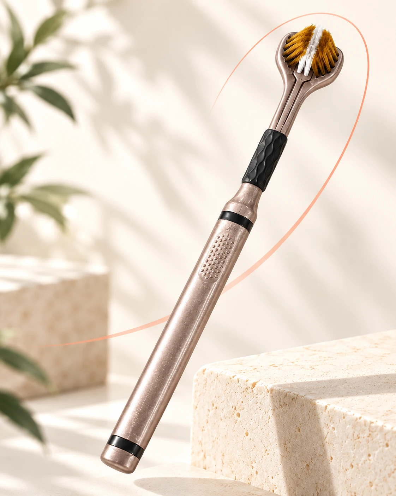
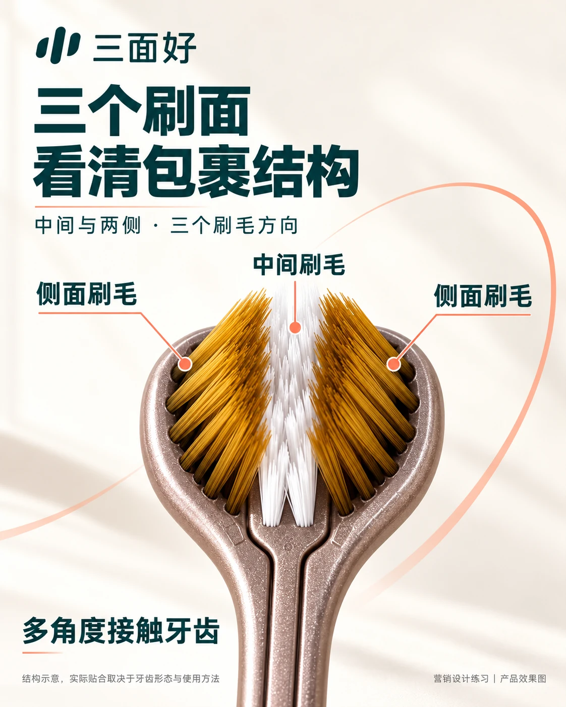
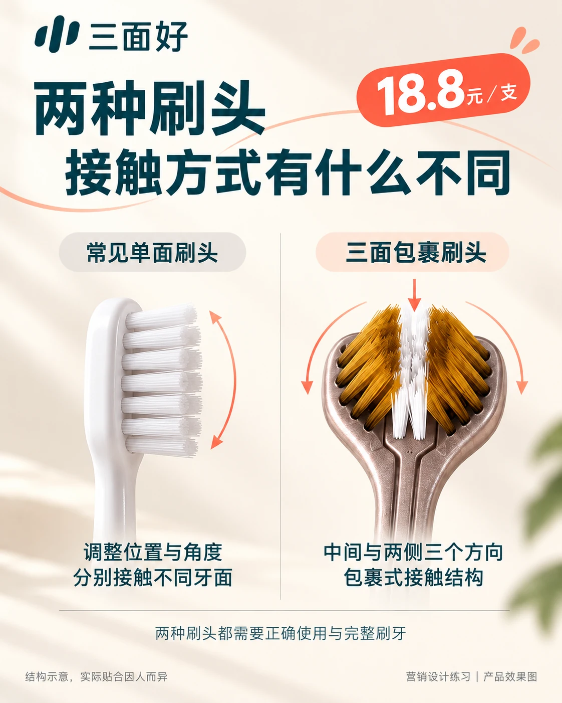
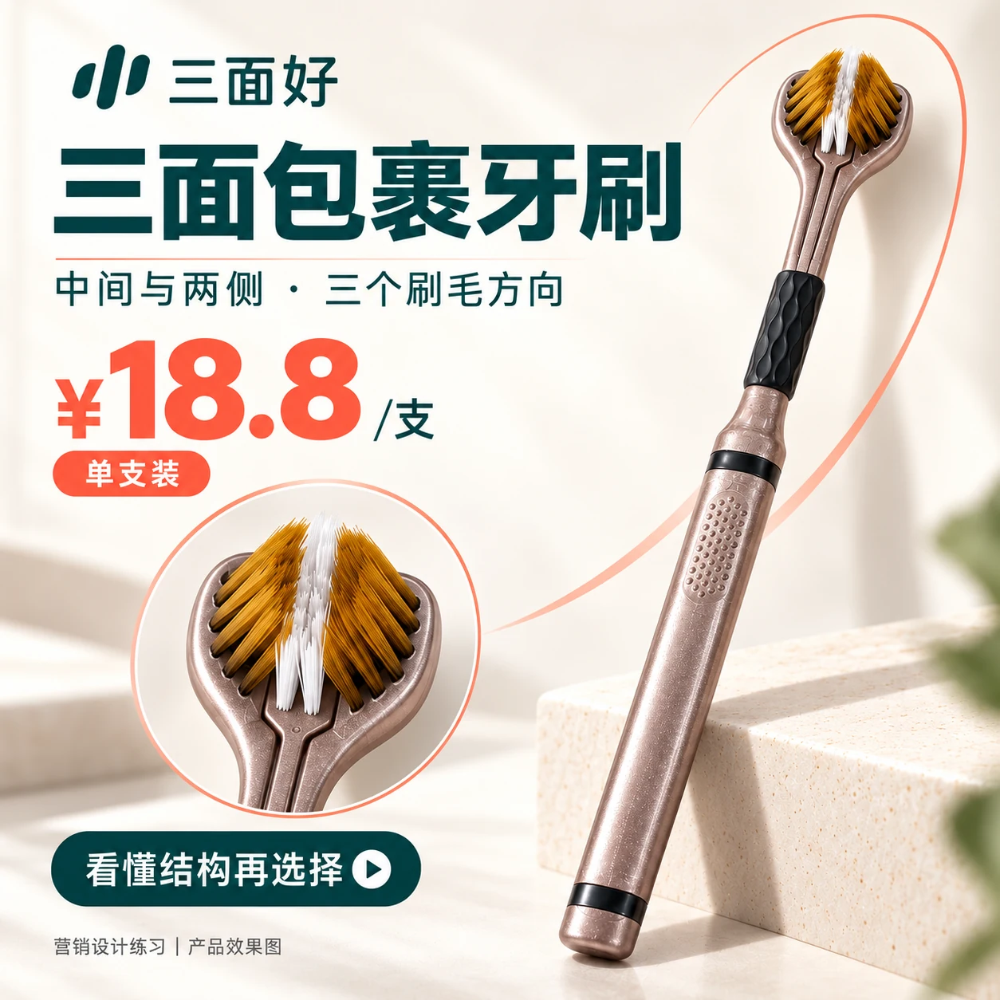

每天的小事，
也可以换个角度。
刷牙时，牙齿的不同表面都需要被照顾。三面好把刷毛安排在中间和两侧，让包裹结构成为这支牙刷最直观的特点。
01
一侧刷毛
从侧面形成接触方向
02
中间刷毛
与两侧共同组成刷头
03
另一侧刷毛
让包裹结构完整呈现
实际贴合取决于牙齿形态、刷头尺寸与使用方法。
THREE SIDES. ONE EMBRACE.
中间与两侧，
让刷头多一个看待清洁的角度。

刷牙时，牙齿的不同表面都需要被照顾。三面好把刷毛安排在中间和两侧，让包裹结构成为这支牙刷最直观的特点。
从侧面形成接触方向
与两侧共同组成刷头
让包裹结构完整呈现
实际贴合取决于牙齿形态、刷头尺寸与使用方法。

单面刷头通过调整位置和角度，分别接触不同牙面。三面刷头把刷毛分布在中间和两侧，形成包裹式接触结构。

多一个结构选择。
同样需要正确使用与完整刷牙。
了解产品的具体用法与适用范围。
按说明操作，不强压刷头。
分区照顾全口，不因三面结构省略步骤。
清洗刷毛及刷头，通风放置。

三面好 · 三面包裹牙刷
香槟灰 / 单支装
¥18.8/支
营销设计练习页面，当前不提供在线交易。
指刷头中间及两侧三个朝向的刷毛区域，设计上形成包裹式接触结构，并不是一次刷完整个口腔。
不能仅凭刷头数量判断清洁效果。这里展示的是结构与接触方式的区别，实际效果还与贴合、方法及刷牙习惯有关。
仍需要正确使用并完整刷牙，三面结构不意味着可以省略区域或缩短为几下。
先确认实际刷头尺寸、适用范围和用法，再核对型号、支数、售价与服务信息。本页面中的品牌和型号属于营销练习设定。